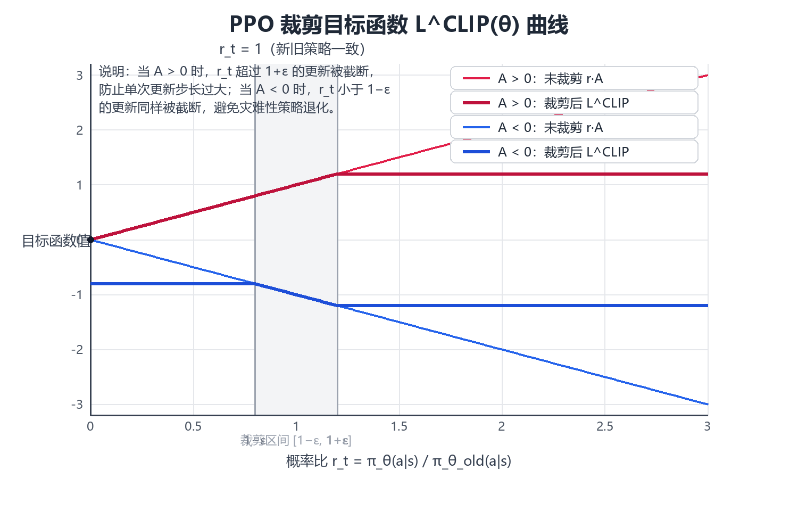

Policy Gradient & Actor–Critic
价值方法先估计“动作有多好”，再选最大值；策略方法则直接学习一个参数化策略 \(\pi_\theta(a\mid s)\)。这使它天然适合随机策略和连续动作，但也带来更高的梯度方差。本章的核心线索是：策略梯度提供无偏但高方差的改进方向，Critic 把方向中的噪声压下去，PPO 则把每一步更新的幅度限制在“旧数据仍然可信”的范围之内。
策略目标与梯度
策略优化的对象是轨迹上的期望回报。设轨迹 \(\tau=(s_0,a_0,r_1,s_1,\dots)\) 由初始分布 \(\rho(s_0)\)、环境转移 \(T(s_{t+1}\mid s_t,a_t)\) 与策略 \(\pi_\theta\) 共同采样，则
目标对参数的导数只作用在策略项上，因为 \(\rho\) 与 \(T\) 都不含 \(\theta\)：
直观理解很简单：如果一次动作带来较高长期回报，就提高它在类似状态下的概率；如果表现差，就降低它的概率。\(\nabla_\theta\log\pi_\theta\) 的形式带来一个关键好处——不需要环境转移模型的导数，只需要能从策略和环境采样，因此它是 model-free 的。
目标的写法会直接影响优化性质，三种常见形式并不等价：
| 目标形式 | 数学表达 | 适用场景 | 主要问题 |
|---|---|---|---|
| 回合总回报 | \(\mathbb E[G_0]\) | 有终止的自然回合 | 回合长度不同，方差随 \(T\) 增长 |
| 折扣回报 | \(\mathbb E[\sum_t\gamma^t r_{t+1}]\) | 持续型任务，\(0<\gamma<1\) | \(\gamma\) 引入偏差，奖励尺度被压缩 |
| 平均奖励 | \(\lim_{T\to\infty}\frac{1}{T}\mathbb E[\sum_t r_{t+1}]\) | 无终止的稳态任务 | 需估计稳态分布，实现更复杂 |
失败模式方面，最常见的是把折扣因子与步长混为一谈：\(\gamma\) 接近 1 时回报的方差随有效时域 \(1/(1-\gamma)\) 增长，若不相应缩小步长 \(\alpha\)，更新会在少数高回报轨迹上剧烈摆动。
策略梯度定理的直觉
上面公式里最不直观的一步是：为什么可以把“对分布求导”换成“对 \(\log\pi\) 求导”？原因是恒等式
把它代回期望，分母的 \(\pi_\theta\) 恰好与采样概率相消，于是“对概率求导”变成了“对样本加权求平均”。这就是所谓的 score function 技巧，也叫 log-derivative trick。它把不可微的采样过程改写成可微的对数概率加权，从而允许随机策略使用梯度下降。
由此得到一个只依赖单条轨迹、不需要值函数、也不需要环境模型的估计量，即 REINFORCE 的单样本形式：
它的无偏性来自 score function 的三条性质：
| 性质 | 表达式 | 含义 |
|---|---|---|
| 期望为零 | \(\mathbb E_{a\sim\pi_\theta}[\nabla_\theta\log\pi_\theta(a\mid s)]=0\) | 任何与动作无关的常数都可自由加减 |
| 与动作无关量正交 | \(\mathbb E[\nabla_\theta\log\pi_\theta(a\mid s)\,b(s)]=0\) | baseline 不改变梯度期望 |
| 二阶信息 | \(\mathbb E[\nabla_\theta^2\log\pi_\theta]=-\mathrm{Cov}[\nabla_\theta\log\pi_\theta]\) | score 的协方差即 Fisher 信息矩阵 |
这条“期望为零”是后面所有方差降低技巧的基础：任何只依赖状态、不依赖被采样动作的项，都不会改变梯度的期望。REINFORCE 的代价是方差量级约为 \(O(T)\) 倍的回报方差，在长回合任务上往往需要成千上万条轨迹才能稳定一次更新。
Baseline 与方差降低
直接使用回报做权重通常方差很大。可以减去一个只依赖状态的 baseline \(b(s)\)，并令
\(A^\pi(s,a)\) 称为 advantage，表示“这个动作相比当前状态下的平均水平好多少”。由于 score function 的期望为零，对任意 \(b(s)\) 都有 \(\mathbb E[\nabla_\theta\log\pi_\theta\cdot b(s)]=0\)，因此 baseline 不引入偏差，只改变方差。
方差下降的幅度可以定量地看。单个样本的加权项为 \(g_t=\nabla_\theta\log\pi_\theta(a_t\mid s_t)\,(G_t-b(s_t))\)，若近似认为 score 与回报弱相关，则方差主要由 \(\mathrm{Var}[G_t-b(s_t)]\) 决定。因此最优 baseline 大致满足
在实践中通常用 \(b(s)=V^\pi(s)\) 作为近似，此时权重恰好退化为 advantage。
| Baseline 选择 | 偏差 | 方差 | 实现代价 |
|---|---|---|---|
| \(b=0\) | 无偏 | 最高，回报绝对尺度大 | 无 |
| \(b=\) 常数（如平均回报） | 无偏 | 略降，通常在 1 倍量级 | 极低 |
| \(b=V^\pi(s)\) | 无偏 | 明显下降，权重变成 advantage | 需要训练 Critic |
| \(b=V^\pi(s)\) 且再做 advantage 归一化 | 可能引入小偏差 | 进一步下降 | 需要批量统计 |
失效模式：若 Critic 早期严重不准，\(G_t-V_\phi(s_t)\) 会出现数值很大但符号错误的权重；更新方向仍然无偏（因为与动作无关的项期望为零），但方差可能不降反升。更隐蔽的问题是把 baseline 与动作采样耦合起来（例如用同批数据内该动作的平均回报做 baseline），这会引入真实偏差，而不只是噪声。
Actor–Critic 架构
Actor–Critic 把两件事拆开：
- Actor：策略 \(\pi_\theta\)，决定动作；
- Critic：价值函数 \(V_\phi\) 或 \(Q_\phi\)，评价当前策略。

最简单情况下，Critic 的 TD error
可以作为 advantage 的一个低成本估计，然后 Actor 使用
Critic 先用 TD error 衡量“结果比预期好还是差”，Actor 再据此提高或降低所选动作的概率。两者共享同一个评价信号，但优化的对象不同：Actor 优化的是对数概率的加权和，Critic 优化的是预测误差的平方。
Critic 的目标可以选成不同长度的自举，这直接决定偏差—方差位置：
| Critic 目标 | 表达 | 偏差 | 方差 | 备注 |
|---|---|---|---|---|
| TD(0) | \(r_{t+1}+\gamma V_\phi(s_{t+1})-V_\phi(s_t)\) | 高，全部来自 Critic | 低 | 可在线更新，最省数据 |
| n-step TD | \(\sum_{l=0}^{n-1}\gamma^l r_{t+l+1}+\gamma^n V_\phi(s_{t+n})\) | 随 \(n\) 下降 | 随 \(n\) 上升 | \(n\) 是显式旋钮 |
| 蒙特卡洛 | \(G_t\) | 无（对给定策略） | 最高，随 \(T\) 增长 | 必须等回合结束 |
| GAE | \(\sum_l(\gamma\lambda)^l\delta_{t+l}\) | 由 \(\lambda\) 连续调节 | 由 \(\lambda\) 连续调节 | 现代策略梯度的默认选择 |
需要注意的是，Actor 与 Critic 通常共享部分特征表示，这会带来耦合：若 Critic 的损失过大，梯度会污染共享特征，使策略学到的表示偏向于预测价值而不是区分动作。工程上常用的做法是给 Critic 略大的学习率、对回传到共享层的 Critic 梯度做截断，或者干脆分离两套网络。
PPO 的更新约束
策略梯度最大的问题之一，是参数一步改得过大时，采样数据很快变成“旧策略的数据”，性能甚至可能突然崩掉。PPO 先定义新旧策略对同一动作的概率比：
再使用裁剪目标：

当某个更新已经把概率比推得很远时，继续沿“让代理目标更大”的方向推进不会继续得到同样收益，因此梯度会被抑制。注意 \(\min\) 的截断方向依赖 \(\hat A_t\) 的正负：当 \(\hat A_t>0\) 时代理目标在上限 \(1+\varepsilon\) 处被压平，当 \(\hat A_t<0\) 时在下限 \(1-\varepsilon\) 处被压平，两个方向都不能无限获利。
\(\varepsilon\) 是最关键的旋钮，取值直接决定“每批数据还能用几次”：
| \(\varepsilon\) | 单步允许的概率比范围 | 典型表现 | 风险 |
|---|---|---|---|
| 0.05 | 极窄 | 更新保守，收敛慢 | 数据利用率低，容易欠拟合 |
| 0.1 | 常用下界 | 稳定，适合高维连续控制 | 对 Critic 质量较敏感 |
| 0.2 | 默认常用值 | 收敛快 | 高曲率目标上偶发性能塌陷 |
| 0.3 以上 | 很宽 | 接近未裁剪的策略梯度 | 旧数据迅速失效，训练震荡 |
需要强调：clip 不是硬约束。它不能保证所有状态动作上的概率比始终落在 \([1-\varepsilon,1+\varepsilon]\) 内，因为裁剪只作用在目标函数上，参数本身仍可自由移动；它只是用一个简单的代理目标降低过大更新的风险。若同一批数据训练多个 epoch，概率比会持续偏离 1，此时应监控实际 KL 或裁剪触发比例（超过约 20%–30% 通常意味着 epoch 数偏多）。
裁剪与 KL 约束的关系
PPO 的裁剪做法来自一个更严格的动机：信赖域。TRPO 直接求解带约束的问题
其中约束项用 Fisher 信息矩阵近似，\(\delta\) 典型取 \(0.01\)。求解它需要共轭梯度与线搜索，每步代价约为一次二阶近似。PPO 用 clip 代替这个约束，本质上是把“限制 KL”换成“限制代理目标的收益”，从而把二阶问题降为一阶问题。
两者关系可以用一阶近似看清：当概率比 \(\rho_t\) 接近 1 时，有
也就是说，限制 \(|\rho_t-1|\le\varepsilon\) 相当于对 KL 施加一个与概率比方差相关的软上界。它更便宜，但不精确，也不保证在全部状态下成立。
| 约束方式 | 每步代价 | 约束强度 | 超参数 | 主要缺陷 |
|---|---|---|---|---|
| KL 硬约束（TRPO） | 高，需二阶近似与线搜索 | 强，近似可行域 | \(\delta\approx0.01\) | 实现复杂，每步昂贵 |
| KL 惩罚（加进目标） | 中，只需 KL 的采样估计 | 依赖系数调参 | \(\beta\) 需自适应 | 惩罚过小无效、过大停滞 |
| PPO clip | 低，仅一阶梯度 | 软，只在目标上生效 | \(\varepsilon\in[0.1,0.2]\) | 不保证真实 KL 有界 |
| 梯度范数裁剪 | 极低 | 只限制梯度大小 | 裁剪阈值 | 与策略变化幅度无直接关系 |
失效模式：在不平衡的 advantage 分布上（例如大部分 \(\hat A_t<0\)），clip 会大量触发，有效样本数骤降，梯度几乎全部来自少数正 advantage 的样本，导致策略过早收敛到局部最优。缓解办法是配合 advantage 归一化，或者对负 advantage 样本单独加权。
优势估计的偏差—方差权衡
只看一步 TD error 方差低，但偏差依赖 Critic；直接使用完整回报偏差小，但方差大。GAE 用参数 \(\lambda\) 把多步 TD error 加权起来：
因此它的作用不是增加一个新的学习目标，而是给 PPO/Actor–Critic 提供更平滑的 advantage 估计。它同时决定了两端的量级：
其中 \(H\) 是 Critic 误差经自举传入的步数。两个方向相反，因此 \(\lambda\) 是纯粹的交易旋钮，而不是“越大越好”。
| 估计器 | 偏差来源 | 方差来源 | 样本需求 |
|---|---|---|---|
| TD(0) | Critic 误差全部进入 | 单步奖励噪声 | 低 |
| GAE(\(\lambda=0.95\)) | 少量自举，残留误差按 \(0.94^H\) 衰减 | 中等 | 中 |
| GAE(\(\lambda=1\)) | 无（对给定策略） | 整条轨迹回报 | 高 |
GAE 与优势估计的插值
\(\lambda\) 的语义正好可以用两个端点说清楚：它在偏差与方差之间连续插值。
当 \(\lambda=0\) 时，求和只剩第一项：
退化成一步 TD error，也就是 Actor–Critic 最基础的形式：偏差最大（完全信任 Critic），方差最低。
当 \(\lambda=1\) 时，利用望远镜求和（telescoping）可得
退化成蒙特卡洛回报减 baseline：偏差最小（在回合内完全不依赖 Critic），方差最大。
中间值给出的是一个几何加权的“有效时域”，近似为 \(H_{eff}\approx 1/(1-\gamma\lambda)\)：
| \(\lambda\) | 有效时域 \(H_{eff}\)（\(\gamma=0.99\)） | 自举权重 \((\gamma\lambda)^H\) | 适用情形 |
|---|---|---|---|
| 0.0 | 1 步 | 迅速衰减 | 奖励密集、Critic 准确 |
| 0.9 | 约 91 步 | \(0.891^{H}\) | 需要较强长期信用分配 |
| 0.95 | 约 200 步 | \(0.94^{H}\) | 默认推荐值 |
| 0.99 | 约 5000 步 | \(0.98^{H}\) | 极长时域、奖励稀疏 |
| 1.0 | 整条回合 | 无自举 | Critic 很差或回合很短 |
失效模式：\(\lambda=1\) 且回合很长时，单条轨迹的回报方差主导梯度，训练曲线会出现大幅摆动；\(\lambda=0\) 且 Critic 系统性低估某类状态时，策略会稳定地把这些状态当成差状态，产生可复现的偏差而非随机噪声——这种错误不会随采样量增加而消失。
连续动作与随机策略
在连续动作空间里，无法像 DQN 那样枚举所有动作并取最大值。Actor 可以直接输出动作分布参数，例如高斯分布的均值 \(\mu_\theta(s)\) 与标准差 \(\sigma_\theta(s)\)，动作由 \(a\sim\mathcal N(\mu_\theta(s),\sigma_\theta^2(s))\) 采样得到，对应的对数密度为
这一项的梯度对均值是 \((a-\mu)/\sigma^2\)，对标准差是 \(\big((a-\mu)^2/\sigma^2-1\big)/\sigma\)。如果某个动作的 advantage 为正，均值会被拉向该动作；若为负，则被推远。当采样动作已落在分布尾部时，公式里除以 \(\sigma^2\) 的项会让梯度异常大，这是连续控制中常见的梯度爆炸来源，通常用动作裁剪或 tanh 压缩来处理。
SAC 是一个代表性方法：它在回报目标之外加入策略熵，鼓励策略在学习阶段保持一定随机性：
其中 \(\alpha\) 是温度系数，\(\mathcal H\) 是策略熵。加入熵的直接效果是把最优策略从确定性推向随机：在 \(Q\) 值相近的动作上，熵项会主动给多个动作留出概率。常见连续控制方法的差异集中在“如何约束策略变化”上：
| 方法 | 策略更新来源 | 随机性控制 | 更新约束 | 典型问题 |
|---|---|---|---|---|
| DDPG | 确定性策略梯度 | 外部加噪 | 软更新目标网络 | \(Q\) 过估计导致策略退化 |
| TD3 | 双 Critic 取小 | 目标策略加噪 | 延迟更新 + 目标平滑 | 超参数较敏感 |
| SAC | 随机策略 + 熵项 | 熵自动调节 \(\alpha\) | 重参数化 + 双 Critic | 对奖励尺度敏感 |
| PPO（连续） | 裁剪目标 | 高斯策略的 \(\sigma\) | clip 概率比 | 探索不足时 \(\sigma\) 塌缩 |
对入门学习而言，不需要继续展开 DDPG、TD3、TRPO 等算法谱系。真正需要掌握的是：
Policy Gradient 给出方向；Critic 降低估计方差；PPO 控制更新尺度；SAC 展示连续控制中的随机 Actor–Critic。
策略改进与数据有效期
策略更新后，旧策略采集的数据与新策略分布之间会出现偏差。PPO 的概率比正是用来衡量样本在新旧策略下的相对权重；更新过大时，旧数据就不再能可靠代表当前策略。因此每批数据可重复使用多少次，应和策略变化幅度一起判断。
用重要性采样语言描述，用旧策略数据估计新策略目标会引入修正因子 \(\rho_t\)，其方差大致随二阶矩增长：
这解释了“epoch 数越多、数据越旧”的定量来源：\(\rho_t\) 的分布随时间被拉宽，估计量方差随之上升，而梯度方向本身也开始偏离新策略的真实梯度。
| 每批数据 epoch 数 | 典型 KL（相对批起点） | 裁剪触发比例 | 结果 |
|---|---|---|---|
| 1 | 极小（<0.005） | 低（<5%） | 稳定但样本利用率低 |
| 4 | 小（约 0.01） | 约 10%–20% | 常用配置，稳定与效率平衡 |
| 10 | 中等（约 0.02 以上） | 30% 以上 | 部分样本失效，收益递减 |
| 30 以上 | 大 | 大量裁剪 | 梯度信号失真，训练不稳 |
判断数据是否还有效，最直接的两个指标是实际 KL 与裁剪触发比例：前者反映策略整体偏移，后者反映有多少样本被截断。实践中常用的规则是：当平均 KL 超过约 0.02，或裁剪比例超过三成，就应该丢弃这批数据重新采样，而不是继续压低学习率硬撑。
失效模式：学习率调低并不能阻止数据失效，因为失效源于分布变化而不是步长太大；反过来，若整批数据的 advantage 几乎全为正（例如奖励尺度全正），clip 的目标会产生“只要增大概率比就有收益”的假信号，使策略在第 2 个 epoch 就过度偏离，此时必须做 advantage 归一化。
下一步：把这三条线索接回基础——先看 MDP 与 Bellman 方程 里的回报与时域定义，再看 值方法 如何处理同一个信用分配问题；概率工具见 概率与随机变量，分布偏移与安全性的延伸见 鲁棒与安全中的不确定性。